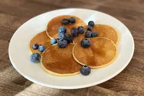

Cottage Cheese Pancake

Description
Cottage cheese pancakes may sound odd, but they are fantastic! My husband and I love to make this for breakfast on lazy weekends. Serve with syrup.
- 1 cup cottage cheese
- ⅓ cup all-purpose flour
- 3 large eggs, lightly beaten
- 2 tablespoons vegetable oil
- cooking
Steps
- Make the batter by combining the dry ingredients, then stirring in the milk and egg.
- Skewer the frankfurters and roll in the batter.
- Fry the corn dogs in hot oil until lightly browned.